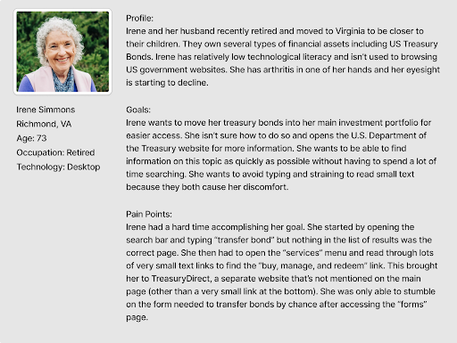

Heuristics Evaluation
To start, I conducted a preliminary evaluation of the US Treasury website and looked for obvious heuristics issues.
Key Points:
• No obvious indication of the purpose of the site on homepage
• Vague header sections
• Wordy, unclear text
• Links are not differentiated from static text
• Navigational dead ends, no way to return to last page
• Many important functions are located on external sites, which is not indicated
Proto Persona
What would be a typical use case for a visitor to the Treasury Site? What sort of limitations might they have? I wrote a proto persona to create a representation.
Site Map
Next, I created a rough map of the current treasury site, focusing specifically on the main navigation bar and each of it’s subsections. Many links under the header lead to external sites (marked in green) but these are not differentiated from pages on the main site, marked in blue
User Path
To test the clarity and navigability of the Treasury site, I tasked 5 users with locating a specific form relating to transferring treasury bonds. To do this, users need to navigate to TreasuryDirect, a sister site of the main treasury site. A key question I was looking to answer was whether content being located on external sites acts as a barrier to users. A page by page breakdown of one of the possible paths from the homepage to the required form is below.
Key Points:
• Most testers guessed that the correct link was under the “services” header, but this wasn’t immediately obvious
• Most testers were confused when they were directed to an external site, and questioned if they had made the correct choice
• It was unclear for some testers if they had had to create an account to access bond management tools
• The search feature does not provide relevant pages even when searching for keywords like “bonds” and “transfer”
• In all cases, testers commented on the length and difficulty of the process